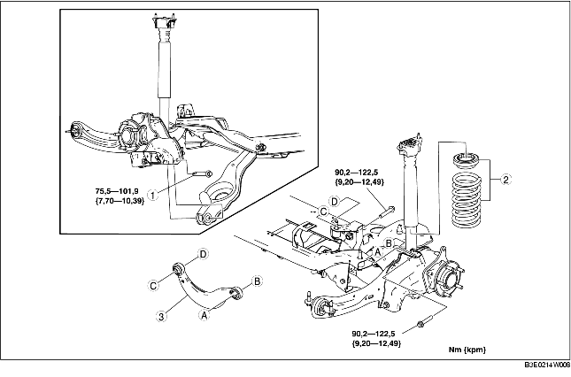

1. Ta loss den bakre givaren för automatisk nivåjustering. (Se DEMONTERING/MONTERING AV GIVARE FÖR AUTOMATISK NIVÅJUSTERING.)
2. Demontera i den ordning som anges i tabellen.
3. Montera i omvänd ordning mot demonteringen.
4. Kontrollera hjulinställningen och justera vid behov.
(Se HJULINSTÄLLNING BAK.)

.
1. Stöd den nedre länkarmen med en domkraft.
2. Lossa bakre nedre länkarmens inre bult.
3. Demontera bakre nedre länkarmsbulten (utsidan).
1. Montera den bakre övre länkarmen så att märket IN är riktat mot fordonets insida.